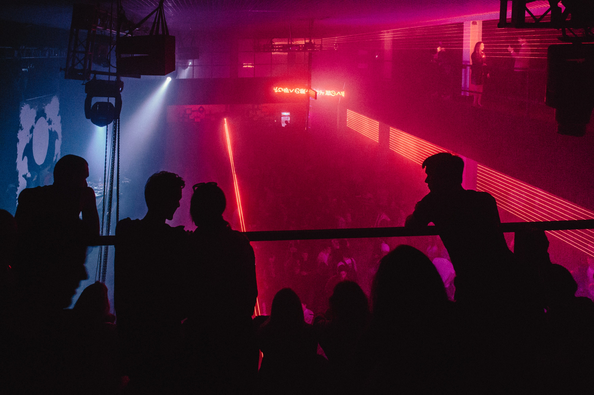

Omar Cabaleiro



CV / Bio
2020s
- Work History: Warehouseman primarily, and Dishwasher secondarily. These have grown to become my go-to lines of work for "filling in the blanks" (between periods where I'm involved in work which I can reasonably commit to beyond the very short-term, ofcourse, based on a variable ratio between my level of interest and how much money I can make).
- Becoming a self-taught Programmer is currently my (more or less) top priority. After several false starts, the earliest of which dates back to around 2019, I finally committed to the process in late summer of 2022. I'm presently working on building my portfolio, focusing mainly on (Front End) Web Development.
2010s
- Work History: Nightlife Security was my primary line of work, almost exclusively so, from November 2012 through the end of the decade (into early 2021). My first gig was an Antony Santos concert in Newark, NJ. I worked mostly throughout northeastern New Jersey (Newark, Paterson, Hoboken, Jersey City, etc), but also a bit in NYC (Mid-to-Lower Manhattan), particularly in 2019. Here-and-there, I also did a bit of general Security Guard work, along with making a brief return to Light Industrial and Restaurant Back-of-House work toward the end of the decade.
- Formal Education: throughout 2019 I completed short courses in a variety of fields, including Allied Health (Certified Nurse's Aide, Phlebotomy Technician, EKG Technician), Bookkeeping (Basic, and also Certified Bookkeeper exam prep; QuickBooks Basic and Advanced), Bartender/ Mixologist, and Information Technology (CompTIA A+ exam prep).
- In 2013 I returned to pursuing Personal Trainer-related certifications, with Underground Strength Coach Level 1, while I was volunteering as Conditioning Coach for a local men's amateur soccer team, Garden State Croatia F.C. I stopped until 2018, when I attained, in chronological order: Poliquin Personal Trainer Level 1, USA Gymnastics University: Instructor, CrossFit Level 1 Trainer, USA Weightlifting Level 1 Coach, and ACE Personal Trainer (also, in 2020, USA Powerlifting Club Coach).
2000s
- Work History: From October 2000 through the end of the decade (into 2011), my primary line of work was Personal Training, on-and-off. Additional work experience included: Bank Teller, Personnel Coordinator, Light Industrial (Warehouse, Factory, Shipping and Receiving), Restaurant Back-of-House (Line Cook, Dishwasher, Expediter), and Plumber's Assistant- mostly during the early 2000s; Massage Therapist and Landscaper during the late 2000s.
- Formal Education: On 2 separate occasions I was a student in Accounting Associate Degree programs (via different institutions), the second one in 2005-6, without completing either. In 2007-8 I completed a 720-hour Massage Therapy diploma program. In 2009 I started a Personal Trainer diploma program, but did not finish.
- Electronic Music Production was my primary pursuit in life, for the most part, from the beginning of 2000 through the end of the decade (into early 2011). I stopped collecting records, along with my Nightlife Promotion efforts, some time in 2000. My last DJ gig was in 2002, if I remember correctly.
- The techno track "Delta" was my only official music release. It was on net label DoBox Recordings' compilation album Resurgence, which came out toward the end of 2007. I had been introduced to MySpace by a classmate early in 2006, which is where I connected with the label founder, as well as some other musicians who were on the album (and many other musicians whose music I'd been a fan of throughout the '90s during my DJ-ing days).
- I returned to formally training in the Martial Arts toward the end of the decade, beginning in summer of 2008 with Brazilian Jiu-Jitsu. Though I also trained a bit in other martial arts, the vast majority of my efforts were in (gi and no-gi) grappling. I continued training on-and-off into the early 2010s.
1990s
- Work History: Throughout much of the late '90s I worked mostly in Bartending, and in Food Service (Deli/ Luncheonette). Additionally, I worked as a Gas Station Attendant, Mail Room Clerk, and Security Guard.
- Formal Education: During the second half of the decade, I attended community college on-and-off, changing majors several times. Mostly I majored in Physical Education and Media Production Technology, but also Psychology, Graphic Design, and I even tried Electrical Engineering. No degree was attained.
- Hobbies: While in High School (1990-4), extracurricular activities included Varsity and Intramural Soccer, Art Club, and Chess Club. At the end of the decade I played 2 seasons in a local men's recreational soccer league, on 2 different teams (Sporting Callao, then Danubio).
- I was introduced to Underground House and Techno music genres in late 1990, around the beginning of my freshman year of high school and started collecting records shortly thereafter. From 1993 through the end of the decade DJ-ing was my primary pursuit in life; secondarily, Nightlife Promotion (starting in 1996). I mostly played gigs throughout (northeastern) New Jersey, but also some in NYC (throughout the southern half of Manhattan), and eastern Pennsylvania. Until the year 2000 or so, when I started going by my real name, I performed under the stage name "DJ Furious" (at gigs and on mixtapes).
- Some time around 1996 a friend got me into truly intense resistance training, though I had already been "going to the gym" for a couple of years by that time.
- Tae Kwon Do was the first Martial Art that I ever received formal instruction in. I started in late summer of 1991, continuing into the early part of my sophomore year of high school. That was the only season in which I did not play on the soccer team.